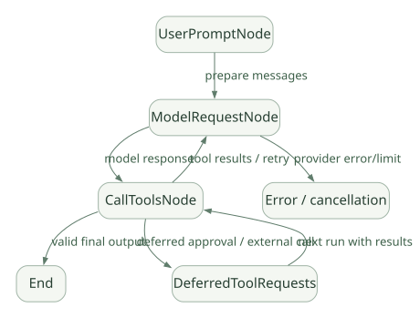

SECOND STUDY / Node와 Run 수명
Node와 Run 수명
이번 단원의 읽는 관점
UserPrompt→ModelRequest→CallTools의 전이와 State·Deps·Context를 연결합니다.
살펴볼 경계텍스트·유효 Output·Deferred·오류·취소의 결과를 구분하세요.
이 페이지의 세부 목차
4. Agent 실행을 하나의 상태기계로 이해하기#
4.1 가장 중요한 내부 Node#
[SRC] v2.61.0의 _agent_graph.py는 UserPromptNode, ModelRequestNode, CallToolsNode를 주요 Node로 노출한다. 일반적인 요청은 아래처럼 진행한다.
가로로 이동해서 읽을 수 있습니다. 도식 크게 보기 ↗

원문의 학습용 도식입니다. 연결 방향·분기 조건·점선·쌍방향 연결을 보존해 세로로 배치했습니다. 실제 구현·의사코드·해석의 구분은 본문을 함께 읽으세요.
도식 원문 보기 (Mermaid)
flowchart TD
U[UserPromptNode] -->|prepare messages| M[ModelRequestNode]
M -->|model response| C[CallToolsNode]
C -->|tool results / retry| M
C -->|valid final output| E[End]
C -->|deferred approval / external call| D[DeferredToolRequests]
D -->|next run with results| C
M -->|provider error/limit| X[Error / cancellation]단, 최종 출력의 종류에 따라 Tool 없이 종료하기도 하고, 후속 Run이 이력을 복원할 때 일부 Node를 건너뛰기도 한다. 이는 '모든 실행이 언제나 세 Node를 한 번씩 통과한다'는 뜻이 아니다.
4.2 Graph 사용과 공개 Graph Workflow는 다르다#
내부 Agent Graph는 표준 모델 요청·Tool·Output 처리를 위한 엔진이다. 사용자 정의 Pydantic Graph는 조건 분기·워크플로를 선언하는 별도 작성법이다. Agent가 Graph로 구현되어 있다고 해서 Agent 자체가 자동으로 비즈니스 단계(검색 → 검토 → 승인)를 명시적 Workflow로 실행한다는 뜻은 아니다.
4.3 실행의 불변식#
이 코드를 분석할 때 다음 성질이 유지되는지 확인하자.
- 모델이 Tool을 호출했다면 ToolCall ID와 결과 메시지의 대응이 맞아야 한다.
- 검증에서 거부된 Tool은 정상 비즈니스 실행으로 취급하면 안 된다.
- Output이 성공해도 같은 응답의 다른 Tool들이 이미 실행되었는지는
EndStrategy에 달려 있다. - 사용량 한계는 비용·토큰·요청 횟수에 따라 다른 계층에서 적용될 수 있다.
- Deferred 상태의 요청은 과거 이력만 대충 재전송해서 안전하게 복원할 수 있다고 가정하지 않는다.
[SRC] Graph source, Tool execution.
5. Agent.run()·Agent.iter() 및 실행 준비 과정#
5.1 사용자 API와 실제 엔진을 구분한다#
세 가지 API가 비슷해 보여도 호출자가 받는 제어 수준은 다르다.
| API | 사용자 관점 | 내부적으로 검토할 사항 |
|---|---|---|
agent.run(prompt) |
최종 결과를 비동기로 기다림 | 전체 Graph와 lifecycle 종료까지 책임 |
agent.run_sync(prompt) |
동기 호출 래퍼 | 기존 이벤트 루프 내부에서 사용 제약, 동시성 특성 |
agent.iter(prompt) |
Graph Node 진행 과정 관찰·제어 | Node별 실행과 스트리밍 소비·종료 조건 |
agent.run_stream() |
스트리밍 결과 | 출력 유효화 시점, 종료와 스트림 정리 |
agent.run_stream_events() |
이벤트 흐름 | Tool 이벤트, Model delta와 최종결과 차이 |
[SRC] Agent.iter()는 Agent Graph의 외부 Facade 역할을 수행하며, 실행 전 준비 로직과 리소스 진입·정리를 별도 경계로 둔다. 자세한 진입점은 Agent source.
5.2 실행 준비의 개념적 경로#
| 순서 | 보내는 쪽 → 받는 쪽 | 호출 내용·조건 |
|---|---|---|
| 1 | Caller → Agent API | run(prompt, deps, history, model...) |
| 2 | Agent API → Run lifecycle | prepare run/configuration |
| 3 | Run lifecycle → Toolsets | enter resources, resolve tools |
| 4 | Run lifecycle → Agent graph | start UserPromptNode |
| 5 | Agent graph → Model | request(messages, tool definitions) |
| 6 | Model ⇢ Agent graph | response |
| 7 | Agent graph → Toolsets | validate/execute tools if requested |
| 8 | Toolsets ⇢ Agent graph | results/deferrals |
| 9 | Agent graph ⇢ Run lifecycle | final result or error |
| 10 | Run lifecycle ⇢ Agent API | lifecycle cleanup |
| 11 | Agent API ⇢ Caller | result |
원문의 학습용 도식입니다. 호출 방향과 반복·분기·참고를 순서표로 보존했습니다. 실선 →와 점선 ⇢를 구분합니다. 실제 구현·의사코드·해석의 구분은 본문을 함께 읽으세요.
도식 원문 보기 (Mermaid)
sequenceDiagram
participant App as Caller
participant A as Agent API
participant L as Run lifecycle
participant G as Agent graph
participant T as Toolsets
participant M as Model
App->>A: run(prompt, deps, history, model...)
A->>L: prepare run/configuration
L->>T: enter resources, resolve tools
L->>G: start UserPromptNode
G->>M: request(messages, tool definitions)
M-->>G: response
G->>T: validate/execute tools if requested
T-->>G: results/deferrals
G-->>L: final result or error
L-->>A: lifecycle cleanup
A-->>App: result실제 실행 과정은 Capabilities와 회복 경로에 의해 추가로 감싸질 수 있다. 위 그림의 prepare/lifecycle은 코드 구조를 이해시키기 위한 단계 구분이다.
5.3 Lifecycle에서 분석할 항목#
[SRC] agent/__init__.py에서 _run_lifecycle_hooks와 내부의 per-run capability 실행을 볼 수 있다. 전후 Hook은 모델 요청 앞뒤에만 있는 것이 아니라 전체 Run의 시작·성공·실패를 감싸는 영역이 있다.
before_run이 실패하면 모델 요청 전에 종료되는가?- 성공한 Run의 결과를
after_run에서 수정할 수 있는가? - 에러 때도 리소스가 정리되는가? 부분적으로 완료된 외부 Tool 작업까지 취소되는가?
- 리소스를 획득한 Context와 해제하는 Context의 일관성을 어떻게 맞추는가?
- 동일 Agent 객체에 여러 Run이 동시에 들어올 때 Run별 리소스가 격리되는가?
설계적 시사점: Runner의 책임은 단순 반복뿐 아니라 리소스 생명주기, Hook, Usage, 결과화, Stream 정리까지 포함한다. Core를 직접 만들려면 이 계층을 초기에 분리하는 편이 이후 기능 확장에 유리하다.
6. Graph의 State/Deps/Node와 종료 조건#
6.1 State, Deps, Context는 다른 개념#
- Graph State: 반복 과정에서 변경되는 런타임 상태(모델 요청 횟수, 출력 Retry 사용량, 관련 Message 기록).
- Graph Deps: Node가 실행에 필요한 모델, ToolManager, Output Schema, Usage Limits 등 실행 서비스.
- RunContext: Tool/Hook/Prompt 함수에 전달되는 현재 실행 정보와 사용자가 주입한 Dependencies의 View.
- App Dependencies: DB Client, 인증 Context 등 실제 애플리케이션 자원(호출자가 구성).
비슷한 이름이라도 State는 변하는 데이터, Deps는 협업하는 서비스, Context는 현재 코드의 인터페이스에 가깝다.
6.2 각 Node의 책임#
UserPromptNode — 신규 사용자 입력, Message History, Instructions, System Prompts, Deferred Tool Results를 조합한다. 과거 실행이 Pending Tool Call로 끝났다면 Tool 실행으로 바로 재진입할 수 있다.
ModelRequestNode — 현재 Message와 ToolDefinition을 준비하고 모델에 요청한다. Usage/Deadline 검사, 모델 선택·변경, Capabilities가 개입할 수 있는 지점을 분석한다.
CallToolsNode — ModelResponse를 해석하고 Function/Output/Unknown Tool을 분류하며, 검증·실행·Retry·Output 처리를 한 뒤 종료 또는 다음 모델 요청을 결정한다.
[SRC] Node 선언: _agent_graph.py.
6.3 종료는 단순 '텍스트가 나왔는가?'가 아니다#
모델이 텍스트를 반환해도 다음 상황을 구별해야 한다.
- 순수 문자열 최종 답변으로 인정 가능한 경우.
- Structured Output Schema를 충족해 결과로 인정되는 경우.
- 모델이 Function Tool도 요청해 아직 추가 실행이 필요한 경우.
- 모델이 Output Tool을 호출했지만 인자 검증 또는 Output Validator가 실패한 경우.
- 승인·외부 실행을 기다리는 Deferred Tool이 있는 경우.
- Usage/Deadline/Retry 제한이 초과된 경우.
특히 2–4의 충돌을 해결하는 것이 EndStrategy의 역할이다. 뒤의 12장에서 상세 분석한다.
6.4 종료와 중단의 의미 구분#
| 결과 | 의미 | 후속 책임 |
|---|---|---|
| 정상 완료 | Output Schema/Validator를 통과한 Final Result | 호출자에게 반환 |
| 오류 종료 | 모델·검증·제한·사용자 코드 오류 | 오류 기록·재시도 여부 판단 |
| Deferred | 승인 또는 외부 결과 대기 | 대기 요청 보존, 검증된 결과로 후속 Run |
| Cancelled | 호출자 취소·Deadline 등 | 진행 중 Tool/외부 자원 정리 확인 |
| Suspended provider response | 제공자 모델의 비동기·중간 상태 | 제공자 Resume 조건과 메시지 꼬리 복원 확인 |
모든 상태를 '종료'라고만 부르면 정확히 한 번 실행, 비용 계상, 재개 설계를 잘못하기 쉽다.